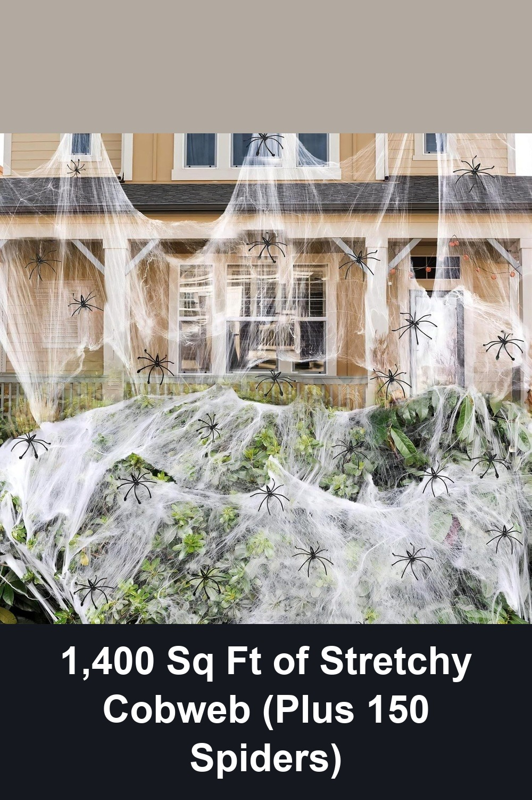

JOYIN Halloween Outdoor Decorations Giant Spider, 5 Ft Large Spider for Yard Lawn Garden Patio Scary Halloween Outside Decor, Indoor Haunted House Prop and Home Party Decor, Black
A 5-foot hairy black spider with bendable, adjustable legs that hook onto fences, doors, trees, or porches in seconds — the kind of oversized yard prop that makes trick-or-treaters stop and stare before they even reach the door.
This will be my 3rd Halloween with it… it's held up super well and still looks nice. It's one of my favorite Halloween decorations.— verified Amazon buyer
View on Amazon →
ZPISF 1400 sqft Halloween Spider Webs Decorations with 150 Extra Fake Spiders, Super Stretchy Cobwebs for Halloween Decor Indoor and Outdoor
Ultra-stretchable cobweb that covers porches, bushes, and doorways in minutes, no hooks or stakes needed — just drape, stretch, and add the 150 included fake spiders for a haunted-house look that lasts the whole season.
Wow! Even better in person! It's so realistic and surprisingly durable — I didn't need any hooks or stakes, just stretched it over the corners of my house and tree branches, and it even stood up to my water sprinklers.— verified Amazon buyer
View on Amazon →AISENO Realistic Skeleton Stakes Halloween Decorations for Lawn Stakes Garden Halloween Skeleton Decoration Outdoor
A skull and two arm stakes that push straight into soil or lawn with no tools, arranged however you like for a crawling-out-of-the-grave scene that's ready in minutes and reusable every year.
This was very easy to use and the size was perfect. The arms are adjustable so you can do multiple poses. It was very easy to install, took less than a minute... it hasn't fallen down so it's pretty functional.— verified Amazon buyer
View on Amazon →